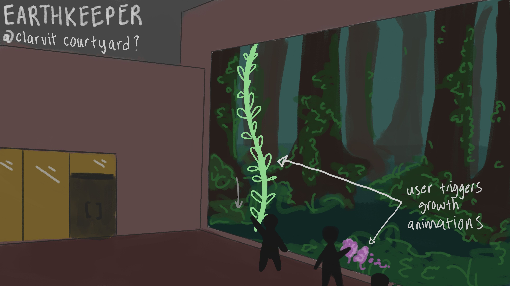

The Earthkeeper
by Elaine Gao, Malaya Heflin, Zoe Poppert
Artists' Statement
“The Earthkeeper” is an interactive projection installation where users will be invited to use their movement to temporarily grow a desolate forest. We hope to use our piece to demonstrate the simple beauty of regrowth. Through hand-drawn animations, TouchDesigner, and a Kinect sensor, we will allow users to manipulate the environment projected before them.
Our piece will be publicly exhibited on May 9th 2024 at the AV Williams Building, as part of the Immersive Media Design Capstone Fair.
Elaine, Malaya, and Zoe are all graduating Immersive Media Design majors at the University of Maryland,
College Park.
Development

initial inspiration & mood board
